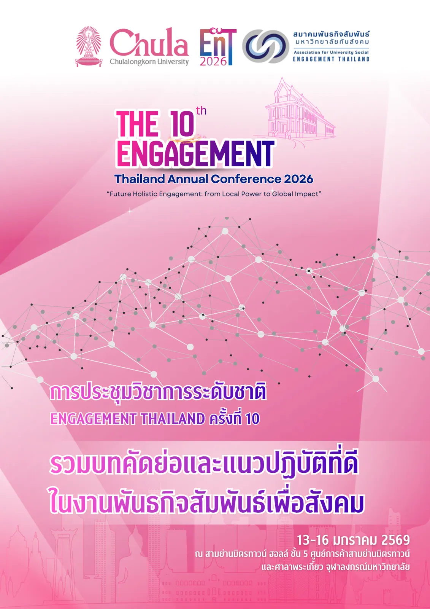

การประชุมวิชาการระดับชาติ · ครั้งที่ 10
ENGAGEMENT
THAILAND 2026
The 10th Engagement Thailand Annual Conference
การประชุมวิชาการระดับชาติ Engagement Thailand ครั้งที่ 10
Future Holistic Engagement: from Local Power to Global Impact
ลองค้นหา:

สำรวจผลงาน
รวมบทคัดย่อและแนวปฏิบัติที่ดีในงานพันธกิจสัมพันธ์เพื่อสังคม
สรุปเนื้อหาจาก e-Book Good Practice ของงาน EnT 2026 จัดโดยสมาคมพันธกิจสัมพันธ์มหาวิทยาลัยกับสังคม ร่วมกับจุฬาลงกรณ์มหาวิทยาลัย